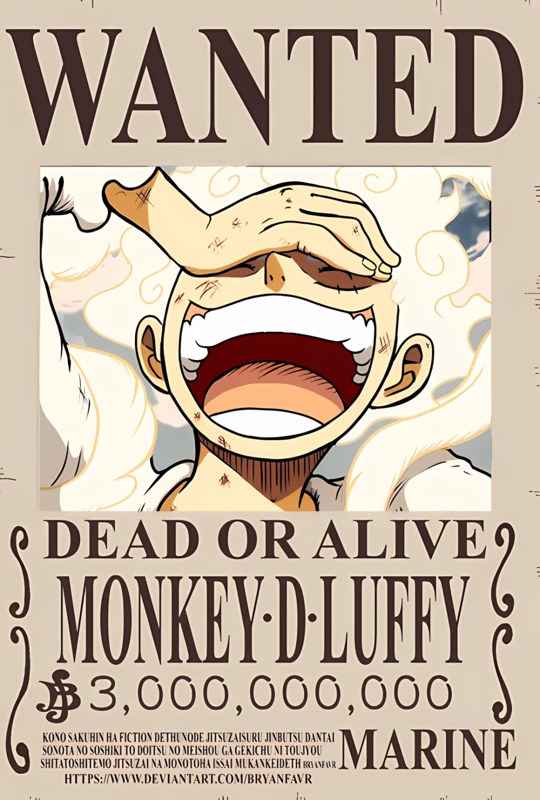

One Piece Bounty
Bounty Changes
The ability of rubber fruit
Body Elasticity: Luffy's entire body has become rubber, and can stretch, deform, elongate, and even rebound like a spring. For example, Luffy can stretch his arms to strike enemies at a distance, or bounce out of the enemy's attack range.
15,000,000 Berry: In the East Sea chapter, Luffy received his first bounty for defeating Arlong and other pirate leaders.
30,000,000 Berry: After entering the Grand Line, Luffy's bounty increased, and he gradually showed more strength.
100,000,000 Berry: Defeated Silva Zip and Roger's subordinates.
400,000,000 Berry: The confrontation with Enelu, Barrett and other events made Luffy a very dangerous target.
1,500,000,000 Berry: Finally entered the range of the Four Emperors and became one of the most threatening pirates on the sea.
Background and achievements
The Four Emperors

Shanks is one of the legendary characters in "One Piece" and has a very high status and influence. He is not only Luffy's enlightenment mentor, but also occupies an important position in the pirate world. As one of the Four Emperors, Shanks' leadership, wisdom and powerful strength make him one of the representative figures in the pirate world. Although he is not based on violence, his deterrent power and strength should not be underestimated.